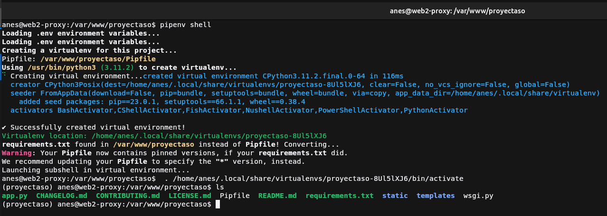

Práctica 3.3: Despliegue de una aplicación Flask (Python)
Cuidao
Falta documentar
Inicialización y despliegue básico de aplicación
Instalación de pipenv
Inicialización de aplicación





Creación de archivo de wsgi

Prueba de funcionamiento

Servicio Gunicorn con Systemd
Prueba de funcionamiento de Gunicorn

Obtención de ruta del ejecutable de gunicorn

Creación de servicio Systemd

Creación host en Nginx


Cuestiones
Cuestión 1
Busca, lee, entiende y explica qué es y para que sirve un servidor WSGI
Un servidor WSGI es un intermediario entre el servidor web y el servidor de aplicaciones. Es un estándar que permite facilitar el unir un servidor web a uno o varios de aplicaciones destinado a Python. Las peticiones que le llegan al servidor web este las pasa al servidor WSGI y el servidor WSGI las pasa a la aplicación correspondiente, o la instancia de esta ya que si lo permite puedes tener varias instancias de una misma aplicación funcionando, actuando de balanceador de carga, como Gunicorn